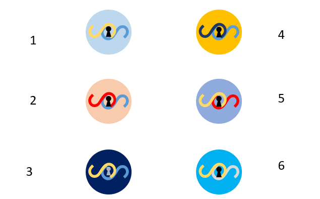

Protect Your Privacy
Role: Product Manager
Tools: Amazon Alexa, Python, Microsoft Office Products, LucidChart
Responsibilities: Product Manager (Vision/Strategy), Project Managing
SecureSession: Provides basic security to your Amazon Alexa device to protect your financial information.
Summary:
A team of 4 including myself were responsible for creating an Amazon Alexa Skill within a week ontop our day job. We wanted to create a working MVP of our custom Alexa Skill. The purpose of our skill, SecureSession is to provide basic voice security to accidental activations and Dolphin Attacks (inaudible soundwaves to human ears, but are picked up by Home Assistant devices), which can be used to hack Home Assistant devices for malicious intent. SecureSession serves as a primary defensive mechanism to prevent the retrieval of sensitive financial information.
Motivating Problem:
Companies are moving their products and services to modern technologies such as Home Assistant (HA) devices since its becoming the new consumer staple. Because MassMutual's business involves sensitive financial information, it's important to have a security feature. Because Alexa is triggered by voice commands, we found through our user research that Dolphin Attacks are a threat to these HA devices.
Process:
Pain points: Security and privacy concerns would be considered process pain point since it deters and inhibits the customer experience when trying to conveniently access your own financial information via HA devices.
Customer Discovery:
We did basic qualitative research from fellow colleagues and employees at MM regarding ownership of HA devices. We found that there is a decent representation of HA ownership and that the technology is becoming more integrated into people's everyday lives. Many people have never heard of a Dolphin Attack and were unaware of its damage when used for malicious intent. In addition, participants brought up how having guests or young children who consciously or unconsciously know what they're doing with a HA device could pose as another security threat.

Here are some basic logo designs of SecureSession.
We created basic use case model to showcase the flow of the system.
Solution:
Features: When a MM client wants to access their financial information via their HA device, they would deactivate SecureSession so they can have access to their account detail. After they're done, they would reactivate SecureSession through the voice commands, now their account is locked. Anyone who tries to retrieve this information would be denied unless they knew the SecureSession password to deactivate it.
KPI(s):
Because this project was to produce a MVP of our product, we didn’t get to fully measure KPIs. There would need to further discussion about which metric would be considered the core and tracking metrics. However, some KPIs to consider if this product was to be worked in the future would be the following...
Warning Attempts: Measure the number of attempts of infiltration that SecuredSession has blocked (accidental triggers or Dolphin Attacks detected).
Conclusion/Limitations:
During our tech demo presentation to various marketing and R&D lab sponsors, they were impressed that we got a fully functional MVP of our custom-made Alexa skill. While we did get the core functionality, we did not fully get to incorporate the other features. Some limitations of the development of this Skill is that it's a very basic and effective way of having a way of protecting your information from being accessed through sound waves. We did not do any sophisticated QA testing to ensure this feature is nearly impenetrable. For our customer discovery, we had one week to complete this Skill, so we collected a small amount of data, the sample isn't truly represensitive or in-depth as we would've liked it to be.